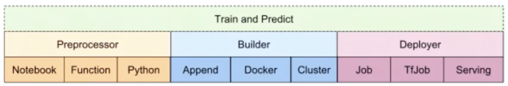

Fairing
Fairing
Kubeflow fairing은 kubernetes 환경에서 모델 학습이나 배포를 위한 컨테이너 빌드, 모델을 학습, 모델 배포 과정을 단순화할 수 있는 python library임.
로컬 환경에서 작성한 모델 학습 코드를 쿠버네티스 클러스터에서 실행하기 위해서는 작업환경과 학습코드가 포함된 도커 이미지를 빌드하고 쿠버네티스 클러스터에 띄워서 학습을 진행해야 한다. 뿐만 아니라 작업 환경에 따른 몇몇 작업을 해줘야 하는 경우도 있다.
fairing api를 사용하면 위 과정을 python script나 jupyter notebook 내에서 코드 몇 줄로 간단히 해결할 수 있다.
Components of fairing

Preprocessor (전처리기)
preprocessor는 fairing이 컨테이너 이미지를 만들때 이미지 생성에 필요한 정보를 정의하는 역할. 컨테이너 이미지에 어떤 파일을 포함시킬지 선택할 수 있고, 불필요한 파일은 제외시킬 수도 있으며 포함시킬 수 있는 파일의 종류는 다음과 같다.
Python - 파이썬 스크립트를 통째로 포함시킬 수 있다.
Function - 파이썬 스크립트 전체 대신 내가 원하는 특정 함수만 포함 시킬 수 있다.
Notebook - ipynb 포맷의 쥬피터 노트북 파일을 포함시킬 수 있다. 이때 ipynb 파일에서 파이썬 코드가 아닌 부분을 제거해서 실행가능한 python 스크립트로 변환하여 포함 시킬 수 있고, python 코드가 아닌 주석과 이미지를 포함한 전체 파일을 포함시킬 수 도 있다. 후자의 경우 papermill 이라는 library를 통해 노트북 파일이 실행된다.
Builder (생성자)
생성자는 컨테이너 이미지를 빌드하는 방법과 컨테이너 이미지를 저장할 위치 등을 정의하는 역할.
append - 기존 컨테이너 이미지를 바탕으로 새 레이어를 추가하는 방법이다. 기본 도커 이미지를 가져와서 새로 이미지를 작성하는게 아니라, 기존의 이미지에서 새롭게 추가된 부분만 이미지 레지스트리에 푸시하는 방법이라서 빌드하는데 시간이 상대적으로 적게 걸린다는 장점이 존재한다. containerregistry 라이브러리를 사용하기 때문에 로컬 도커 데몬 설치가 불필요하다.
docker - 로컬 도커 데몬을 사용하여 컨테이너 이미지를 빌드하고 컨테이너 이미지 레지스트리에 푸시하는 고전적인 방식.
cluster - 쿠버네티스 클러스터에서 학습 작업에 사용할 컨테이너 이미지를 빌드하고 컨테이너 이미지 레지스트리에 푸시하는 방식. 위의 docker와 차이는 로컬에서 빌드하냐 클러스터에서 빌드하냐의 차이가 존재하는 것 같음(?)
Deployer (배포자)
배포자는 생성자(builder)를 통해 생성된 이미지를 배포하고 실행할 위치를 지정한다. 그리고 해당 위치에 있는 클러스터에 작업을 배포하고 실행하는 역할을 한다.
Job - 쿠버네티스 Job 리소스를 사용하여 학습 작업을 시작한다.
TfJob, PyTorchJob, GCPJob - 배포하려는 코드가 tensorflow or pytorch 기반이거나, Job을 배포하려는 대상이 GCP(google cloud platform)라면 각 상황에 맞는 Job을 사용가능.
Serving - 쿠버네티스의 deployment와 service를 사용하여, 추론(prediction)을 위한 엔드포인트를 서빙한다.
KFServing (추후 공부 예정) - KFServing을 사용하여, 예측(prediction) 엔드포인트를 서빙한다.
How to install fairing?
pip install kubeflow-fairing
How to use fairing API
https://kubeflow-fairing.readthedocs.io/
Fairing config module
example code
from kubeflow import fairing
fairing.config.set_preprocessor('python', input_files=["/home/andrew/workspace/k8s/train.py"])
fairing.config.set_builder(name='docker', registry='<your-registry-name>', base_image='tensorflow/tensorflow:1.13.1-py3')
fairing.config.run()
TrainJob API
from kubeflow import fairing
from kubeflow.fairing import TrainJob
from kubeflow.fairing.backends import KubeflowGKEBackend
# example 1. Executing a python file
%%writefile train.py
print("hello world!")
job = TrainJob("train.py", backend=KubeflowGKEBackend())
job.submit()
# example 2. Executing a python function
def train():
print("simple train job!")
job = TrainJob(train, backend=KubeflowGKEBackend())
job.submit()
# example 3. Executing a complete notebook
%%writefile requirements.txt
papermill
jupyter
job = TrainJob("train.ipynb", backend=fairing.backends.KubeflowGK(), input_files=["requirements.txt"])
job.submit()